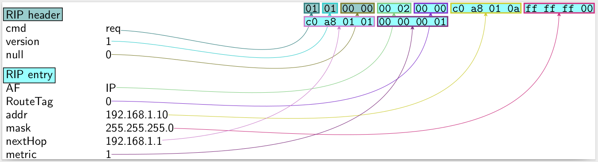

Network packets with Python
Next week, I'll have to start a project on implementing RIP (Routing Information Protocol) using UDP sockets in C. I needed a quick way to get the byte structure of RIP packets, and decided to use scapy. It's quite a handy tool and has a simple interface, which is nothing more than an extended Python shell. Auto-completion is supported out-of-the-box, which is good news for all the command-line enthusiasts out there. Here's how we dump an RIP packet straight to a PDF file.
$ scapy
Welcome to Scapy (2.3.3)
>>> entry = RIPEntry(addr='192.168.1.10', nextHop='192.168.1.1', mask='255.255.255.0')
>>> entry.show()
###[ RIP entry ]###
AF= IP
RouteTag= 0
addr= 192.168.1.10
mask= 255.255.255.0
nextHop= 192.168.1.1
metric= 1
>>> r = RIP() / entry
>>> r.pdfdump()
This generates a self-explanatory packet dump. You could also use a different reader; just change the conf.prog.pdfreader object.

Scapy is more than just an educational tool. It comes with everything for network-induced chaos, from a sniffer to layer-2 sockets, and it's extensible through Python!